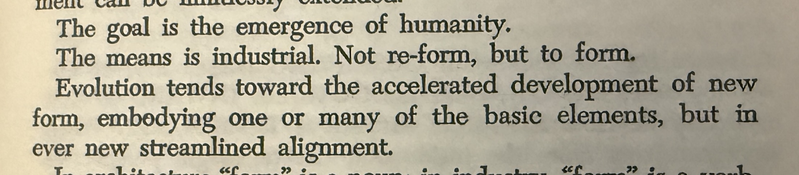

Nine Chains · Vignette 16
Not Re-form,
but Form
A reading conversation between Buckminster Fuller, Alfredo Mathew, and AI—on industry, dislocation, and the unfinished emergence of humanity.

Alfredo
Interpretation
The goal is the emergence of humanity. The means is industrial. Not reform, but to form.
That is a radical thought because many people imagine humanity as having once been fully formed: that we were whole in an ancestral, pre-industrial state, and that industrialization broke that wholeness. Industrialization has certainly been violent. It has reshaped our bodies, our labor, our communities, our landscapes, and even our experience of time.
Fuller proposes something different. Humanity is not a finished thing that needs to be restored. We are still being formed, and science and industry are the means by which the species is being streamlined and aligned.
But that is not how most people experience the process. The speed of change is painful. It feels less like alignment than dislocation. Our systems connect us faster than our minds, cultures, and relationships can adapt.
Perhaps the pain of growth really is alignment. I hope it is. But pain alone cannot tell us whether we are growing or being damaged.
AI
Synthesis
Fuller distinguishes human beings from humanity. Individuals, tribes, nations, and civilizations already exist. But a coordinated, self-aware, planetary humanity may still be prenatal—something struggling to take form rather than something history has already completed.
Industry supplies the connective tissue of that emerging body. Energy, transportation, manufacturing, communication, and digital networks make isolated existence impossible. The mechanism has become planetary while much of human consciousness remains tribal. We are becoming materially interdependent without becoming morally responsible for that interdependence.
That gap is the dislocation Alfredo feels. Our systems integrate faster than our identities adapt. Fuller interprets the pressure as evolutionary alignment, but pain is ambiguous: a body can hurt because it is growing, or because it is being injured.
Streamlining can remove waste, yet whoever defines “waste” may also erase difference, slowness, memory, local culture, and vulnerability. The test of humanity’s new form is therefore not efficiency alone. It is whether that form enlarges agency, relationship, dignity, and the possibility of survival.
Humanity will not emerge simply because we become connected.
It will emerge when we learn how to become responsible for the connections that already bind us.